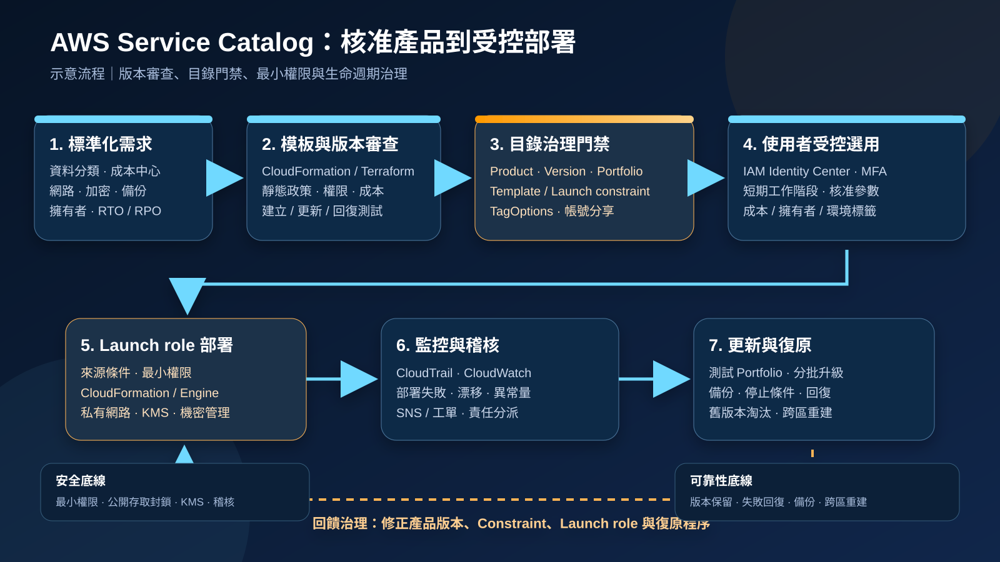

AWS Service Catalog：核准產品與自助部署治理
AWS Service Catalog 將經過審查的基礎設施與應用架構封裝成可搜尋、可版本化、可限制的產品，讓使用者在不取得廣泛建立資源權限的前提下自助部署。服務本身不會替組織判定架構是否安全，也不會自動完成程式碼審查、資料分類、成本核准、備份與跨區復原。
作者：Dr. William｜查閱與發布：2026-11-18
服務定位
AWS Service Catalog 讓平台或雲端治理團隊集中發布已核准的 IT 服務。產品可以代表單一運算環境、資料庫、網路基線，也可以是一套多層應用架構。管理者將產品放入 Portfolio，設定使用者可見範圍、版本、標籤與 Constraint，再分享給指定帳號、組織單位或整個 AWS Organizations。
終端使用者只看得到被授權的產品與參數，啟動後形成 provisioned product。若產品設定 Launch constraint，Service Catalog 會使用指定 IAM 角色部署資源，使用者不必直接取得所有底層服務權限。這個模式把「誰可以選產品」與「產品部署時能建立什麼」分離，但 Launch role 仍必須依產品逐項縮限。
核心概念與服務邊界
目錄與發布單位
- Product：可部署的標準化 IT 服務或應用架構。
- Provisioning artifact：產品的一個可選版本及其模板或組態。
- Portfolio：產品集合，也是授權、分享與治理邊界。
- Provisioned product：使用者實際啟動後，由部署引擎管理生命週期的產品執行個體。
- TagOptions：向使用者提供受控標籤鍵值，協助成本與責任歸屬。
- 產品類型：官方文件列出 CloudFormation、Terraform Cloud 與 External 等類型。
治理與部署控制
- Launch constraint：指定部署產品時由 Service Catalog 承擔的角色。
- Template constraint：限制產品參數可選範圍，降低不合規組態。
- Stack Set constraint：控制 CloudFormation 產品跨帳號與跨區域部署。
- Notification constraint：將產品堆疊事件送往 SNS 主題。
- Tag update constraint：控制產品部署後的標籤更新能力。
- Portfolio sharing：可分享至帳號、組織或組織單位，接收端仍需完成在地授權與角色配置。
Constraint 套用在產品與特定 Portfolio 的關聯上，不代表產品在所有 Portfolio 都自動受同一規則限制。版本更新也不等於所有既有 provisioned product 會自動升級；組織必須定義版本支援、更新窗口、失敗回復與淘汰流程。
適合與不適合的使用情境
適合
- 平台團隊提供核准的 VPC、開發環境、資料庫、容器平台或多層應用基線。
- 讓開發團隊自助部署，同時限制區域、執行個體規格、網路、加密與必要標籤。
- 把 CloudFormation 或 Terraform 組態版本化，透過同一目錄發布給多個帳號。
- 以 Portfolio 區分開發、測試、正式、資料處理與受監管工作負載。
- 使用 Launch role 將終端使用者權限縮到瀏覽、啟動、更新與終止核准產品。
- 對產品版本、授權、跨帳號分享、部署結果與淘汰狀態建立治理流程。
不適合或不能單獨完成
- 把未經審查的模板直接放入正式 Portfolio，假設目錄本身會阻擋不安全資源。
- 以單一高權限 Launch role 部署所有產品、帳號與資料分類。
- 把 Service Catalog 當成完整的程式碼弱點掃描、政策即程式碼或持續交付平台。
- 假設 Template constraint 可以檢查所有模板邏輯、執行期行為與資料流。
- 在標籤、產品描述、參數預設值或外部 URL 放入敏感資料。
- 只管理新產品，不追蹤既有 provisioned product 的版本、漂移、備份與終止。
示意故事案例：受控的資料分析環境
以下為示意案例，不代表特定企業或正式部署。 一家連鎖零售公司希望讓資料團隊在數十分鐘內建立分析環境，但又不能讓每位分析師直接建立任意網路、儲存與資料庫。平台團隊先把一套私有子網路、加密儲存、查詢工作區、日誌與必要告警寫成 CloudFormation 產品，經程式碼審查、靜態檢查與測試帳號驗證後發布為第一個核准版本。
產品被加入「資料分析」Portfolio，Template constraint 只允許核准區域、固定網路與三種容量級距；TagOptions 要求選擇成本中心、資料擁有者與環境。終端使用者透過 IAM Identity Center、MFA 與短期工作階段存取目錄。Launch constraint 指向專用角色，該角色只能建立模板列出的資源，並以來源帳號與來源 ARN 條件降低混淆代理風險。
Service Catalog 透過 CloudFormation 建立 provisioned product。部署資源預設不開放公網，資料使用 KMS 加密，外部整合所需機密由 Secrets Manager 或 Parameter Store 提供。CloudTrail 記錄產品、Portfolio、Constraint 與部署 API，CloudWatch 監控失敗與底層資源。新版先在測試 Portfolio 驗證，再分批升級；終止前確認資料匯出、備份保留與復原責任。

建置與運作流程
- 盤點重複部署需求、資料分類、帳號結構、區域限制、責任人、成本中心與復原目標。
- 選擇 CloudFormation、Terraform Cloud 或 External 產品類型，定義 provisioning engine 與支援責任。
- 將產品模板放入版本控制，執行語法、靜態安全、政策、授權、成本與破壞性變更檢查。
- 在隔離測試帳號驗證建立、更新、失敗回復、終止、備份與跨區復原。
- 建立產品及 provisioning artifact，填寫清楚的擁有者、用途、版本、支援期限與相依服務。
- 依受眾、資料分類與環境建立 Portfolio，避免用單一 Portfolio 混合所有風險層級。
- 建立最小權限 Launch role；以來源帳號與來源 ARN 條件限制 Service Catalog 承擔角色的範圍。
- 加入 Template、Launch、Notification、Tag update 或 Stack Set constraint，並逐項測試限制是否有效。
- 定義 TagOptions 與必要標籤，驗證標籤是否確實傳遞到所有可標記資源。
- 透過 IAM Identity Center／聯合身分、MFA 與短期工作階段授予管理者與終端使用者不同權限。
- 將 Portfolio 分享至指定帳號、組織單位或組織；接收帳號建立對應角色、授權與區域設定。
- 以測試使用者啟動產品，確認可選參數、底層角色、網路隔離、公開存取與 KMS 設定。
- 啟用組織層級 CloudTrail，集中保存 Service Catalog、CloudFormation、IAM 與底層服務活動。
- 以 CloudWatch、SNS、工單或事件流程監控部署失敗、更新失敗、未授權變更與容量異常。
- 發布新版本前建立相容性、資料移轉、備份、停止條件、回復與淘汰計畫。
- 定期盤點舊版本、閒置 provisioned product、未使用 Portfolio、過度權限角色與分享範圍。
- 演練部署引擎失效、模板來源不可用、區域故障、更新失敗及跨區重建。
成本、可用性與維運考量
AWS Service Catalog 依帳號與區域的 API 呼叫量計價，官方價格頁列有每月免費額度，超過後按 API 呼叫計費；建立產品後部署的 CloudFormation、Terraform engine、S3、SNS、CloudWatch、CloudTrail、KMS 與各項工作負載資源另依服務用量收費。大量自動化同步、列舉與輪詢可能增加呼叫量，應優先採事件與批次策略。
Service Catalog、Portfolio、產品與版本具有區域性。跨帳號分享不等於跨區域自動複製；需要多區域時，應明確同步產品、模板、角色、KMS、網路與相依資源。Stack Set constraint 可協助 CloudFormation 產品跨帳號與跨區域部署，但仍需設定失敗容忍、並行度、部署順序與回復程序。
目錄可用不代表底層產品一定可建立。模板儲存、Launch role、CloudFormation 配額、Terraform engine、服務配額、KMS 金鑰、私有端點與區域服務狀態都可能成為失敗點。高可用設計應保留核准模板與版本、跨區部署指引、替代入口、部署狀態監控及可重建的治理設定。
AWS Service Catalog 特有資安風險與控制
- Launch role 權限過大：每個產品或風險群組使用獨立角色，依資源與動作縮限政策，不以全服務管理權限作為長期設定。
- 混淆代理風險：在 Launch role 信任政策加入來源帳號與來源 ARN 條件，並限制可傳遞的角色。
- 終端使用者繞過目錄：以 SCP、IAM 與 permission boundary 限制直接建立受管資源，只開放核准產品操作。
- 管理者權限集中：分離模板作者、產品發布、Portfolio 分享、角色核准與正式部署責任。
- 長期身分資料：人員使用聯合身分、MFA 與短期工作階段；自動化使用工作負載角色。
- Template constraint 覆蓋不足：同時執行程式碼審查、CloudFormation Guard 或等效政策檢查，並驗證模板產生的完整資源圖。
- 不安全產品版本：新版本先在隔離 Portfolio 測試，採簽核、雜湊、來源保護與禁止覆寫既有版本。
- 模板供應鏈遭竄改：限制模板儲存桶寫入者、啟用版本與記錄，外部儲存庫採分支保護及變更審查。
- 公開存取誤開：產品預設使用私有子網路、Block Public Access、最小安全群組與私有端點；公開入口須另行核准。
- 網路邊界不足：按資料分類隔離 VPC、子網路、路由、端點政策、出口與 DNS，不能只依產品名稱判定安全。
- 加密責任錯置：Service Catalog 控制面使用受管加密；產品內資料仍依分類設定 KMS、key policy、grant、輪替與跨帳號使用。
- 機密值進入參數或標籤：外部整合資料存於 Secrets Manager／Parameter Store，不放入產品描述、TagOptions、模板預設值、輸出或 URL。
- Portfolio 分享過廣：只分享給必要帳號或組織單位，定期檢查繼承、Principal sharing、TagOptions 與接收端授權。
- 版本與漂移不可見：盤點 provisioned product 版本、CloudFormation 漂移、底層資源例外與已停用產品。
- 日誌鏈不完整：CloudTrail 集中記錄產品、版本、Portfolio、Constraint、分享、角色與部署活動；CloudWatch 告警失敗與異常量。
- 通知誤信：Notification constraint 的 SNS 事件只作流程訊號，破壞性修復需驗證產品狀態、核准與回復條件。
- 備份與終止衝突：產品終止前檢查資料匯出、保留政策、刪除保護、快照與法遵保存。
- 跨區重建缺口：保留模板、版本、角色、KMS、網路與資料復原程序，定期在替代區域演練。
共同責任邊界
AWS 負責 AWS Service Catalog 受管服務及其底層基礎設施，提供產品、版本、Portfolio、Constraint、分享、API、CloudTrail 與 CloudWatch 整合能力，並保護服務控制面。AWS 也負責官方文件所述的控制面靜態與傳輸中加密機制。
客戶負責產品模板與 provisioning engine、IAM 最小權限、MFA／短期工作階段、Launch role、網路隔離、公開存取、KMS、Secrets Manager／Parameter Store、CloudTrail／CloudWatch、Portfolio 分享、版本審查、成本控制、底層資源安全、備份與跨區復原。產品能成功部署不代表架構已符合組織安全、法遵、可用性或資料治理要求。
上線與維運可執行檢查清單
- □ 產品用途、擁有者、資料分類、成本中心、支援期限與復原目標已定義。
- □ 模板與 engine 組態已納入版本控制、審查、靜態檢查及測試。
- □ 建立、更新、失敗回復、終止與資料保留流程均已驗證。
- □ Product、provisioning artifact、Portfolio 與 provisioned product 邊界已記錄。
- □ Portfolio 依環境、受眾或風險分離，未混用所有工作負載。
- □ 每個產品的 Launch role 採 IAM 最小權限，未使用共用高權限角色。
- □ Launch role 信任政策已限制來源帳號與來源 ARN。
- □ 人員使用 IAM Identity Center／聯合身分、MFA 與短期工作階段。
- □ SCP、permission boundary 與 IAM 已限制繞過目錄直接建立資源。
- □ Template、Launch、Notification、Tag update 或 Stack Set constraint 已依需求測試。
- □ TagOptions 與必要標籤能傳遞到預期資源，且不含敏感資料。
- □ Portfolio 分享只涵蓋必要帳號、組織單位、Principal 與產品版本。
- □ 接收帳號的角色、授權、區域與服務配額已完成驗證。
- □ 產品預設採私有網路、限制出口、封鎖不必要公開存取。
- □ 產品資料依分類使用 KMS，key policy、grant 與跨帳號權限已審查。
- □ 外部整合所需機密由 Secrets Manager／Parameter Store 管理並輪替。
- □ CloudTrail 可追溯產品、版本、Constraint、分享、角色與部署變更。
- □ CloudWatch／SNS／工單可偵測部署失敗、更新失敗與異常操作。
- □ 新版本有測試 Portfolio、核准、相容性、資料移轉與回復計畫。
- □ 舊版本、閒置產品、漂移、例外與過度權限角色會定期盤點。
- □ 終止產品前會檢查備份、快照、匯出、刪除保護與保留期限。
- □ API 呼叫量及底層資源成本已有預算、標籤與異常監控。
- □ 多區域所需模板、角色、KMS、網路與相依資源可重建。
- □ 部署引擎失效、區域故障、更新失敗與跨區復原已演練。
AWS 官方一手來源
- What Is AWS Service Catalog?（查閱：2026-11-18）
- Overview of Service Catalog（查閱：2026-11-18）
- Creating Products（查閱：2026-11-18）
- Managing Portfolios（查閱：2026-11-18）
- Controlling Access（查閱：2026-11-18）
- Using AWS Service Catalog Constraints（查閱：2026-11-18）
- AWS Service Catalog Launch Constraints（查閱：2026-11-18）
- AWS Service Catalog Stack Set Constraints（查閱：2026-11-18）
- Sharing a Portfolio（查閱：2026-11-18）
- Security Best Practices for AWS Service Catalog（查閱：2026-11-18）
- Data Protection in AWS Service Catalog（查閱：2026-11-18）
- Logging AWS Service Catalog API Calls Using AWS CloudTrail（查閱：2026-11-18）
- Monitoring in AWS Service Catalog（查閱：2026-11-18）
- AWS Service Catalog Pricing（查閱：2026-11-18）
- AWS Shared Responsibility Model（查閱：2026-11-18）
內容說明
本文依查閱日可用的 AWS 官方文件整理，作為基礎學習與架構討論材料；實際作業仍須依最新產品類型、區域支援、API 價格、Organizations、IAM、CloudFormation／Terraform engine、KMS、CloudTrail／CloudWatch、底層服務與組織治理程序調整。